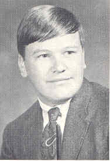
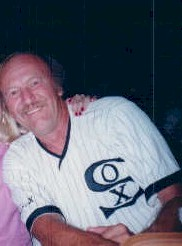
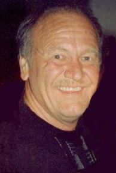

|  1967 Click for Bryant Elementary Photo In Memory (December 25, 2013) (Obituary) |
 2002 |
|  2013 |
Steven Givens, age 64, of 1323 West 6th Street, died at the Ogden Manor on December 25, 2013. He has been cremated and a Memorial Service is being planned for after January 1, 2014.
Schroeder Memorial Chapel at Sixth and Marshall is in charge of arrangements.